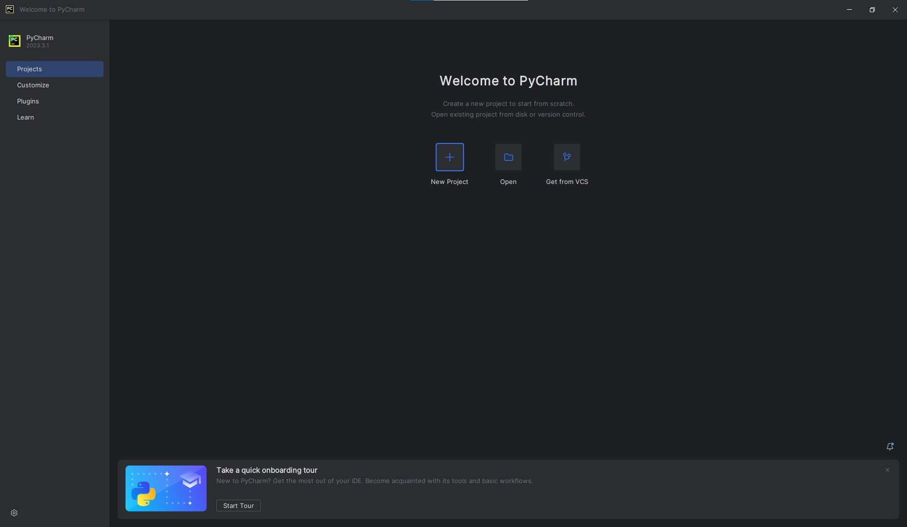
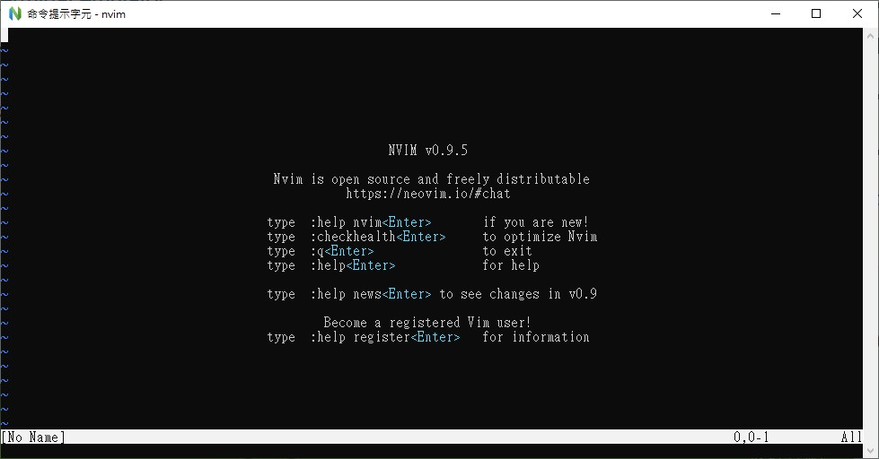

原始碼編輯器（程式碼編輯器）是一種工具，提供工程師們在撰寫程式時能夠有增加效率的功能，
你可以從軟體上面看到五顏六色的各種語法標記（Syntax Highlighting）與其他常用的功能
例如：剪下複製貼上、快速縮排、重構程式碼等等，都必須要透過原始碼編輯器才可能做到。
這個世界上有很多不同的原始碼編輯器，在眾多的原始碼編輯器中，只需要一個挑選的原則。
自己喜歡或者習慣的就好！
自己喜歡或者習慣的就好！
自己喜歡或者習慣的就好！
基本上不必太糾結於其他人常用的編輯器，只要在乎自己習慣或喜歡的編輯器就好了。
接下來，我們會介紹幾個常見的編輯器。
Visual Studio Code又稱為VScode，是由微軟開發，是一開放原始碼與免費的原始碼編輯器。
由於有著很簡潔又簡單的介面，與此同時也有很複雜的設定，使得其成為很有彈性的原始碼編輯器
變成新手好入門，而老手可以依照自己的需求去設定自己想要的介面，便躍升成為在軟體開發者間最常使用的編輯器。
除了彈性的設定外，還有著能夠支援大部分程式語言的語法標記的強大功能，以及社群對於其撰寫的附加元件（extension）都是Vscode的主力喔！
以下是
StackOverFlow
（非常知名的程式論壇網站，只要一找關於程式的問題，一定知道它的存在。）所製作的2023年年度調查。

以上為StackOverFlow在2023年的年度開發者報告
PyCharm作為JetBrains為了Python社群所開發的原始碼編輯器，其實介面設計與
InetlliJ
（一個撰寫Java的原始碼編輯器）非常相似。
PyCharm有個很好的優點，除了他與Intellij有著一樣的介面，同時他也非常嘮叨。對於程式碼格式上的要求非常
嚴格。
以及他有著很不錯的Class（類別，隨後會教到），Function（函式，隨後也會教到），跳轉的功能。
但有著一個缺點，非常吃電腦資源，根據一篇
SOF的問題所述
PyCharm可以一次就吃到1.5G的RAM，造成可能沒辦法一次開太多實況掛台，跟聽YT音樂的情形。（假設你的電腦比較差點）

PyCharm的Welcome頁面
Spyder大概是在學校裡面最常見的原始碼編輯器了，最主要的原因是Spyder能夠內建了許多的第三方套件（簡稱為套件，意旨由其他人所撰寫的程式碼）
除了能夠省略需要使用pip安裝的過程（後面會提），也是帶新手入門Modules的好選擇。
另外Jupyter跟Spyder都是屬於Anaconda旗下的原始碼編輯器，Jupyter特別的地方是網路編輯器。
也就是說，所有程式的撰寫與執行都是在網頁上一並執行喔！
而且他可以建立很多個筆記，等於是將很多不同的程式碼放在一起，然後想要測試哪個區段就可以到哪邊測試喔！
註：學過AI的朋友們，應該也知道Google Colab也是同樣的介面喔！
最後的最後，我想要來介紹這個特殊的原始碼編輯器。NeoVim。
這個編輯器有個特別的地方，他需要你全程「打字！」，你必須要透過背起許多指令以及各個按鍵的功能，才能夠使其有「程式碼編輯器」的功能！
太多了嗎？還有呢，因為它內建的功能不足以成為一個合格的編輯器，所以你要透過安裝其他人編寫的插件才能夠讓他成為合格的程式碼編輯器。
好的，那...它為甚麼會出現在這個世上呢？既然那麼難用的話？
因為它很輕量簡潔、有彈性以及最重要的，以及你不必動用你的滑鼠！
由於寫程式的過程大部分都在透過鍵盤打字，然而，你去動用你的滑鼠會需要伸過去的時間、滑動的時間以及點擊的時間。
NeoVim或者Vim（NeoVim的爸爸）就是完全解決這個問題，它們只要用鍵盤就能做到跟Vscode一樣的功能！
根據一篇
Medium的文章所述
，Neovim成功地減少了許多開發的時間，因為減少了動用滑鼠的時間。
